🔗 Tài nguyên Dự án
Image Classification
1. Tìm hiểu Bài toán & EDA
Tập dữ liệu Intel Image gồm 6 lớp: building, forest, glacier, mountain, sea, street.
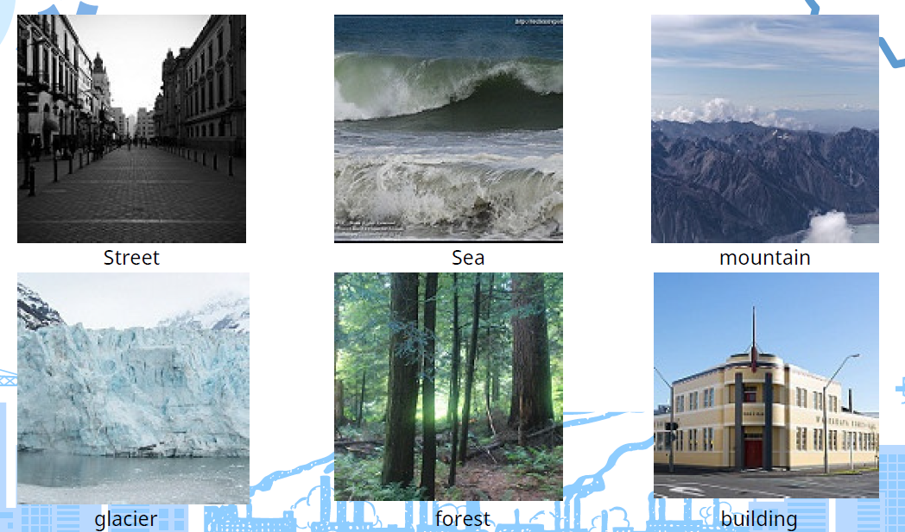
2. Chuẩn bị Dataset và Augmentation
- Data Augmentation: RandomHorizontalFlip, RandomRotation(15) tránh Overfitting.
- Data Normalization: Chuẩn hóa theo thông số ImageNet $(\mu, \sigma)$.
- Data Splitting: Chiến lược Stratified Split (90/10) cân bằng lớp.
- Dataloader: batch_size=128, num_workers=2 để tối ưu hóa nạp dữ liệu.
3. Huấn luyện & So sánh Mô hình
Kiến trúc ResNet50 (CNN)
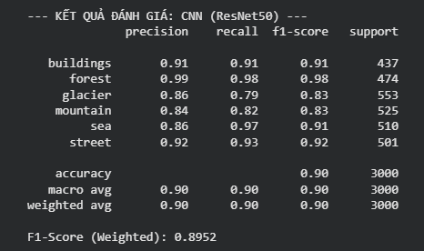
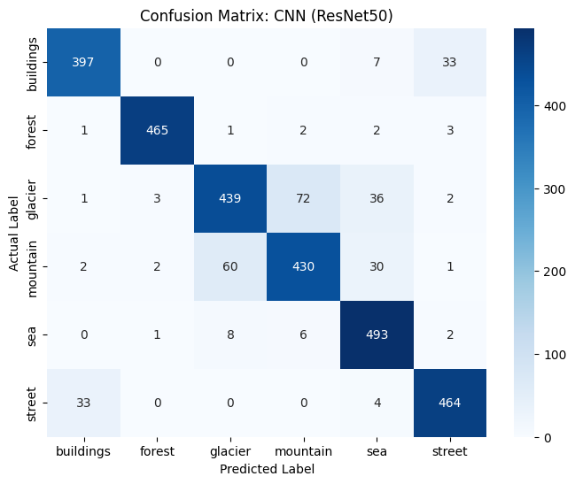
Kiến trúc ViT (Transformer)
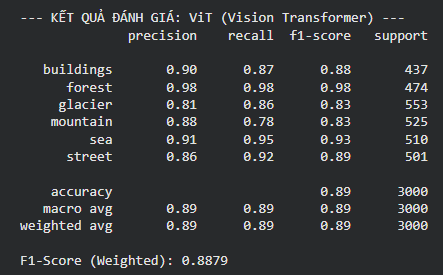
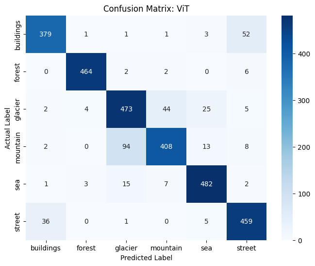
Ensemble: ResNet50 + ViT
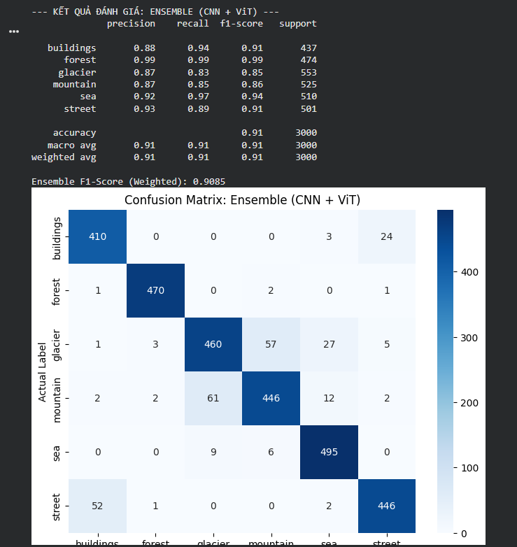
Emotion Classification
1. Tập dữ liệu Emotion
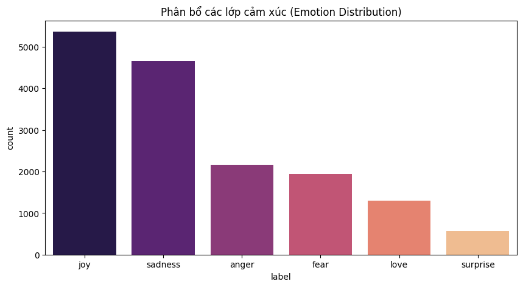
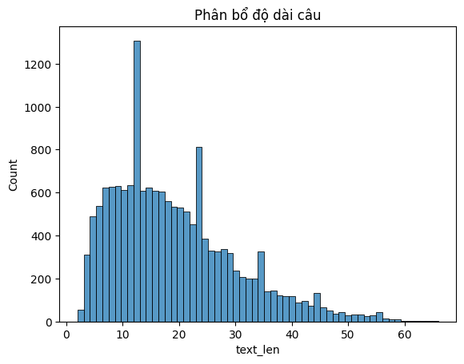
2. Pipeline Tiền xử lý (Bi-LSTM)
- Tokenization: Regex tách từ, chuẩn hóa lower-case.
- Vocab Construction: Token đặc biệt
<pad>và<unk>. - Vectorization & Padding: Độ dài cố định 64, xử lý Batch Training hiệu quả.
3. So sánh Bi-LSTM vs DistilBERT
Bi-LSTM (RNN)
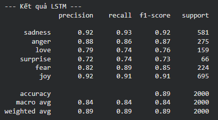
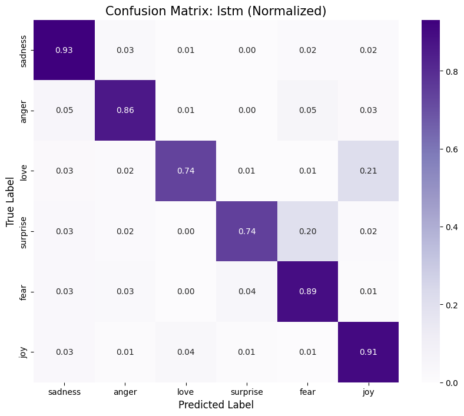
DistilBERT - Frozen all layers
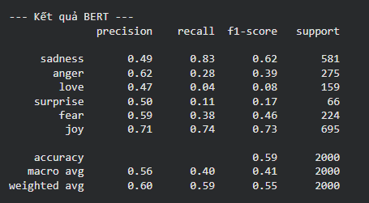
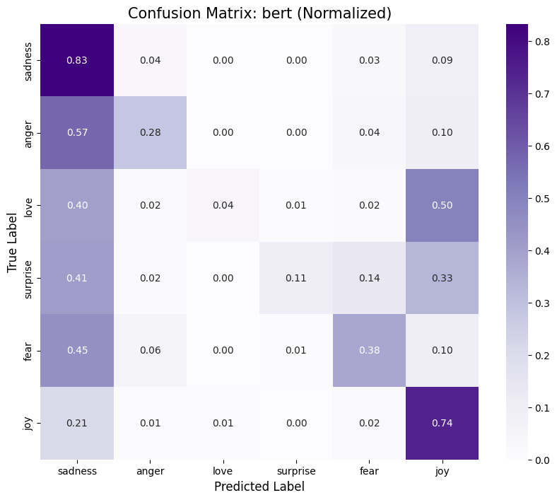
DistilBERT - Unfreeze 2 layers
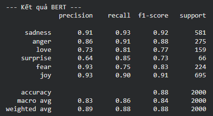
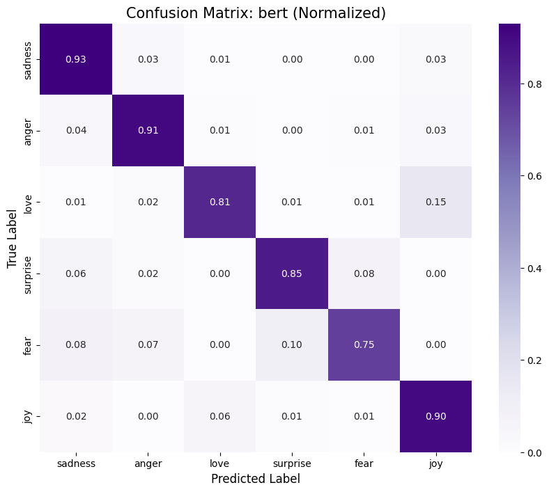
MultiModel Approach (CLIP)
1. Tập dữ liệu Flickr8k
Bộ dữ liệu gồm 8,092 hình ảnh với 5 câu chú thích cho mỗi ảnh. Chúng em lọc ra 6 lớp phổ biến: Dog, Cat, Person, Car, Building, Mountain.
Download Flickr8k DatasetChiến lược thực nghiệm:
- Keyword Filtering: Lọc ảnh qua file
captions.txt. - Few-shot Train: 5 mẫu/lớp (Tổng 30 mẫu).
- Test Set: 20 mẫu/lớp (Tổng 120 mẫu).
Zero-shot Classification
openai/clip-vit-base-patch32
Tính toán Cosine Similarity trực tiếp giữa Image và Text Embedding. Không cần huấn luyện lại.
Few-shot Classification
Logistic Regression on pooler_output
Trích xuất đặc trưng và huấn luyện nhanh trên 30 mẫu ít ỏi để thích nghi với phân phối dữ liệu Flickr.
So sánh Confusion Matrix
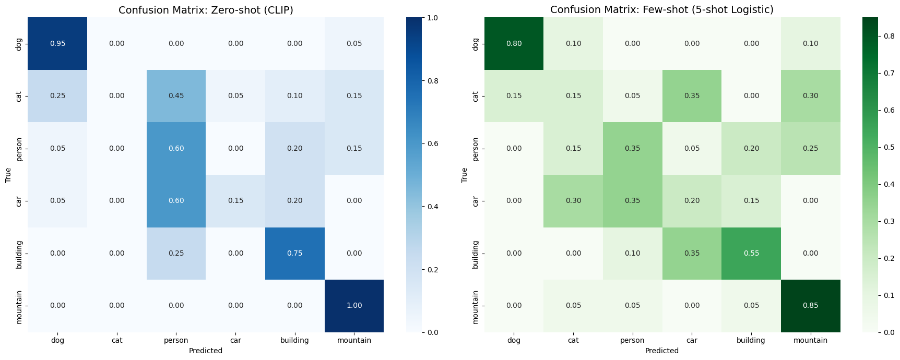
💡 Thảo luận & Kết luận
CNN vs Transformer
CNN (ResNet) hội tụ nhanh và ổn định hơn trên các tập dữ liệu nhỏ (Intel Image). Transformer (ViT) cần cơ chế Ensemble để tối ưu hóa kết quả.
LSTM vs BERT
LSTM mạnh ở việc nắm bắt các đặc trưng cục bộ. Tuy nhiên, BERT vượt trội hoàn toàn nhờ cơ chế Attention sau khi được Fine-tune 2 layers.
Zero-shot vs Few-shot
CLIP chứng minh sức mạnh cực lớn trong Multimodal. Chỉ với 5 mẫu ví dụ, Few-shot cải thiện đến 7% Accuracy so với việc suy luận trực tiếp.